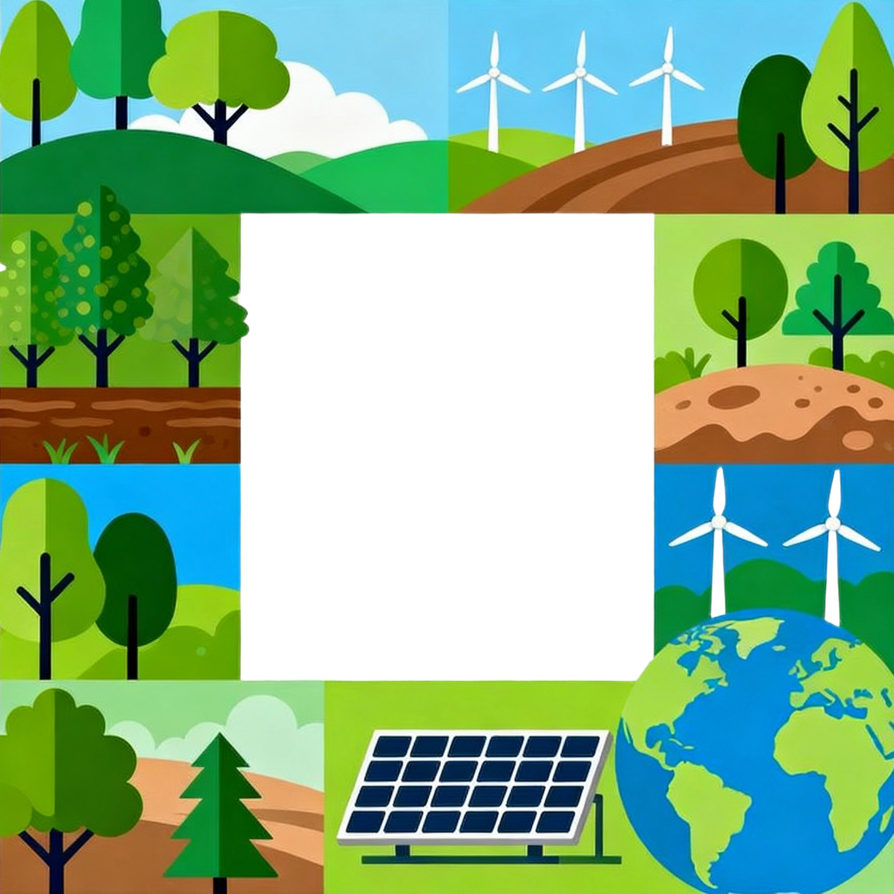

EN
?
重新開始

碳權大富翁：永續行動力
環評審查
掩埋場
機會
水泥廠
碳稅
回收中心
社區公園
命運
人造林
起點
太陽能板
機會
電動車廠
大眾運輸
石化工業
命運
火力發電
水力公司
碳匯中心
鋼鐵廠
機會
塑膠工廠
高鐵
風力發電
命運
研發中心
電力公司
重大污染
濕地公園
機會
國家公園
捷運
地熱發電
命運
奢侈稅
碳捕捉廠
輪到 玩家 1
當前玩家狀態
💰 金錢:
$1500
🏭 碳排:
0 / 500 CO₂
擲骰子
歡迎來到永續大富翁！
所有玩家
彈窗標題
彈窗訊息...